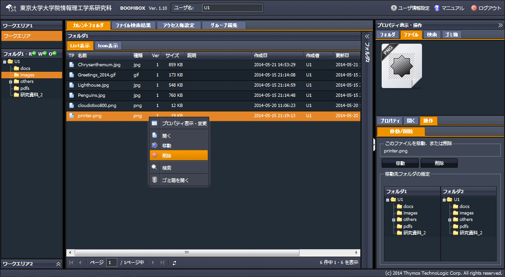
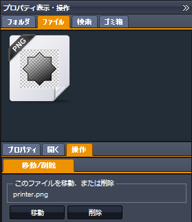
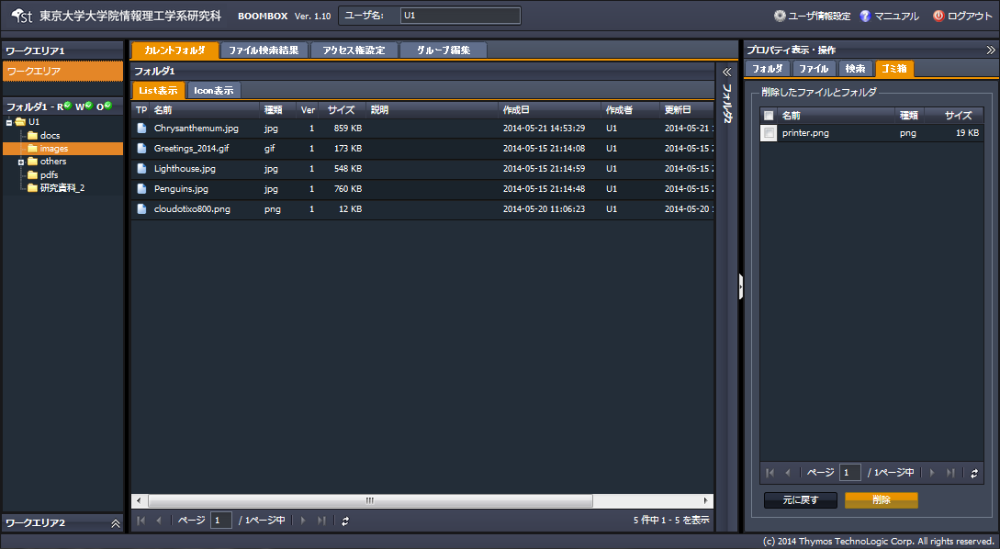

SecretFilesマニュアル
4.SecretFilesサービス(操作編)
4.2.7 ファイル、フォルダの削除
ファイル、フォルダを削除する手順を説明します。説明ではファイルを対象としていますが、フォルダの場合も手順は同様です。
但し、ホームフォルダを削除する事はできません。
(1) 対象ファイルを選択し右クリックメニューを開く
『削除』をクリックします。

(2) 自動的に以下構成の右ペインが開く
右ペインにて、【ファイルタブ】＋【操作タブ】が開きます。
表示された対象ファイルに間違いがなければ、『削除』をクリックします。

(3) ゴミ箱へ移動
『削除』をクリックすると、中央ペインのファイルリストから対象ファイルが消え、右ペインの【ゴミ箱タブ】に表示され（移動し）ます。

(4) ゴミ箱での処理：元に戻す、削除する
【ゴミ箱タブ】の 『元に戻す』をクリックすると、対象フォルダは元の場所に戻ります。『削除』をクリックすると、ファイルは完全に削除されます。